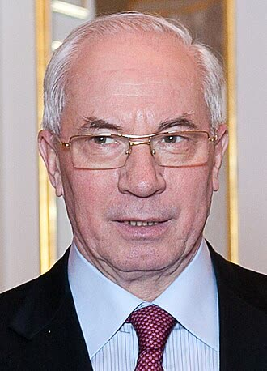

Mosca, esplode un'auto: grave l'ex portavoce di Azarov (causa da accertare)
Bomba o guasto, nessuno sa ancora chi o cosa: intanto si tratta, e all'Italia serve che il negoziato regga, non una scusa in più per alzare la posta.
Redazione Contrappunto · aggiornato il 13.11.2026


Venerdì 13 novembre 2026 un'auto è esplosa a Mosca, nel quartiere di Chertanovo, a sud della città. È rimasto gravemente ferito un uomo che i media russi indicano come Serghei Zavorotny, 72 anni, giornalista e ex portavoce e consigliere di Mykola Azarov. Azarov è stato primo ministro dell'Ucraina dal 2010 al 2014, sotto il presidente filorusso Viktor Yanukovych, e dopo la rivolta di piazza del 2014 vive in Russia. Conta perché arriva il giorno dopo un'altra autobomba a San Pietroburgo e mentre Russia, Stati Uniti e Ucraina trattano sulla guerra.
Vedi di più: 4 parole spiegate, cosa si racconta
Cosa si raccontaLa versione che gira è questa: l'esplosione è un attentato, la seconda autobomba in due giorni in Russia (DW, The Hindu/Reuters), con un ordigno artigianale sotto l'auto (Il Fatto Quotidiano, citando le prime informazioni). Il Kommersant, riportato dal Moscow Times, scrive che gli inquirenti russi la trattano come tentato omicidio e valutano un possibile coinvolgimento dei servizi ucraini. Ma è una versione tra altre: lo stesso Moscow Times riporta che per altre fonti la causa sarebbe un guasto all'impianto a gas dell'auto. [ANSA] [Il Fatto Quotidiano] [La Stampa] [The Moscow Times] [Deutsche Welle] [The Hindu] [Anadolu Agency]
- Mykola Azarov e Viktor Yanukovych
- Yanukovych è stato presidente dell'Ucraina dal 2010 al 2014, vicino a Mosca; Azarov era il suo primo ministro. Dopo le proteste di piazza (Maidan) del 2014 che rovesciarono Yanukovych, Azarov si rifugiò in Russia (Anadolu).
- Comitato investigativo
- L'organo russo che indaga sui reati gravi: ha aperto un procedimento penale sull'esplosione (Anadolu, The Hindu/Reuters).
- Tass e Kommersant
- La Tass è l'agenzia di Stato russa; il Kommersant è un quotidiano russo. Le notizie sull'indagine arrivano da loro e da canali Telegram, non da un comunicato ufficiale letto per intero.
- Autobomba
- Auto fatta esplodere con un ordigno. Qui non è provato che ci fosse: è una delle versioni in circolazione (vedi sopra).
- Il 13 novembre 2026 un'auto è esplosa a Chertanovo, a sud di Mosca: ferito Serghei Zavorotny, 72 anni, ex portavoce di Azarov, ricoverato in gravi condizioni (Tass, Kommersant, Moscow Times, Anadolu).
- Il Comitato investigativo russo ha aperto un'inchiesta penale; nessuno ha rivendicato e da Kiev non c'era commento (Anadolu, DW, Moscow Times).
- Sulla causa ci sono versioni diverse, dall'ordigno al guasto al gas; per il Kommersant gli inquirenti sospettano i servizi ucraini.
ANSA e La Stampa aprono con la Tass e con i canali Telegram; Il Fatto Quotidiano scrive già di attentato e di ordigno sotto il sedile, ma sulla base delle prime informazioni; il Moscow Times riporta anche la versione del guasto all'impianto a gas. DW e The Hindu titolano la seconda autobomba in due giorni, come se il disegno fosse unico: nessuna fonte lo documenta. Non c'è rivendicazione, Kiev non ha commentato, l'inchiesta è appena aperta. Noi non attribuiamo colpe. Ma un'esplosione a Mosca mentre si tratta non aiuta nessuno: all'Italia serve un negoziato che regga, e che chi indaga mostri le prove. [1] [2] [3] [4] [6] [7] [5]
La verifica punto per punto4 passaggi, 7 fonti
Qui sotto ogni cosa scritta sopra, una per una, con le fonti. Confermato: lo dice un documento originale o più fonti lette. Plausibile: lo riportano fonti serie, ma non abbiamo letto l'originale. Discordante: le fonti danno numeri diversi, e diciamo quali. Ipotesi e Opinione sono il nostro ragionamento, separato dai fatti.
Cosa è successo
Il 13 novembre 2026 un'auto è esplosa in via Kirovogradskaya, nel quartiere di Chertanovo, a sud di Mosca. È rimasta ferita una persona, portata in ospedale in gravi condizioni: la Tass, citando le forze dell'ordine, non la nomina; ANSA, il Moscow Times (che cita il Kommersant) e Anadolu (che cita l'agenzia RIA) la indicano come Serghei Zavorotny, 72 anni, giornalista ed ex portavoce e consigliere di Azarov. Secondo il Moscow Times, nato a Khabarovsk, ha lavorato con Azarov durante la presidenza Yanukovych, si è poi trasferito in Russia e ha espresso posizioni filo-Cremlino e anti-occidentali (nel 2018 ha presentato un libro sulla caduta di Yanukovych). Il Comitato investigativo russo ha aperto un procedimento penale.
Cosa non si sa
La causa non è accertata: canali Telegram parlano di un ordigno artigianale sotto l'auto, un'altra versione di un guasto all'impianto a gas (Moscow Times, che riprende Novaya Gazeta Europa). Secondo il Kommersant gli inquirenti trattano il caso come tentato omicidio e sospettano un possibile coinvolgimento dei servizi ucraini. Nessuno ha rivendicato (Anadolu) e da Kiev non c'era commento (Moscow Times, DW). Azarov ha detto alla Tass di non sapere altro e di stare bene.
Il legame con San Pietroburgo e con il negoziato
La «serie» è una cornice, non un fatto: il legame con l'autobomba di San Pietroburgo non è provato e il tempismo con i negoziati non dice chi ci guadagna. Ragionamento: il 12 novembre a San Pietroburgo è morto un militare, secondo 78.ru un colonnello dell'aeronautica (Moscow Times, The Hindu); un ex portavoce di 72 anni è un bersaglio di altro tipo, e la stessa tecnica non basta a dire che la mano sia la stessa. Intanto Kushner parla di «progressi significativi» (Tass, in La Stampa) e il Cremlino, per bocca di Peskov, vuole capire le intenzioni dell'Europa prima di allargare il tavolo (DW): qualunque sia l'origine, un'esplosione a Mosca offre materiale a chi vuole irrigidire le posizioni.
Il nostro punto
Nessuna colpa si assegna senza prove, né a Kiev né a Mosca: oggi c'è solo l'ipotesi di un giornale russo. Ma l'interesse dell'Italia e dell'Europa è che la trattativa regga, perché la guerra ci costa in energia e miliardi. Mosca dovrebbe pubblicare ciò che l'inchiesta accerta, Kiev dire se c'entra o no, e i media europei non titolare «seconda autobomba» prima di sapere che cosa sia stato.
Fonti7, tutte con il link
- Esplode auto a Mosca, 'ferito il consigliere dell'ex premier ucraino Azarov' (13 novembre 2026) (ANSA) · consultata il 13.11.2026
- Bomba sotto l'auto a Mosca: ferito consigliere di Azarov (13 novembre 2026; il testo si interrompe con l'invito a registrarsi) (Il Fatto Quotidiano) · consultata il 13.11.2026
- Auto-bomba a Mosca, ferito l'ex consigliere del premier ucraino che lavorò col filorusso Yanukovich (diretta del 13 novembre 2026) (La Stampa) · consultata il 13.11.2026
- Former Ukrainian PM's Aide Seriously Injured in Moscow Car Blast – Reports (13 novembre 2026) (The Moscow Times) · consultata il 13.11.2026
- Ex-aide to former Ukrainian premier injured in car blast in southern Moscow: Report (13 novembre 2026) (Anadolu Agency) · consultata il 13.11.2026
- Ukraine updates: Second car bomb to hit Russia in two days (diretta del 13 novembre 2026) (Deutsche Welle) · consultata il 13.11.2026
- Second car bomb to hit Russia in two days targets exiled Ukrainian political aide, media report (Reuters, 13 novembre 2026) (The Hindu) · consultata il 13.11.2026
Testo preparato con strumenti di intelligenza artificiale e pubblicato senza revisione umana. Come lavoriamo